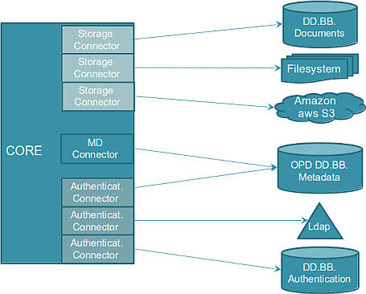
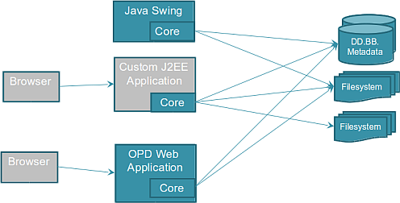

La arquitectura de OpenProdoc se basa en un componente-núcleo que realiza todas las funciones.

Este núcleo puede desplegarse embebido en una aplicación Java estandar (como en el caso del cliente OpenProdoc Pesado o la versión OpenProdoc Portable). Puede tambien desplegarse en una aplicación J2EE (como es el caso del cliente Web OPD).

Existe un conector remoto que permite conectar el core OpenProdoc con el servidor Web por medio de REST/http. Esta alternativa, aunque reduce el rendimiento, aumenta la seguridad y facilita la administración, al estar centralizado en un servidor (o granja de servidores).